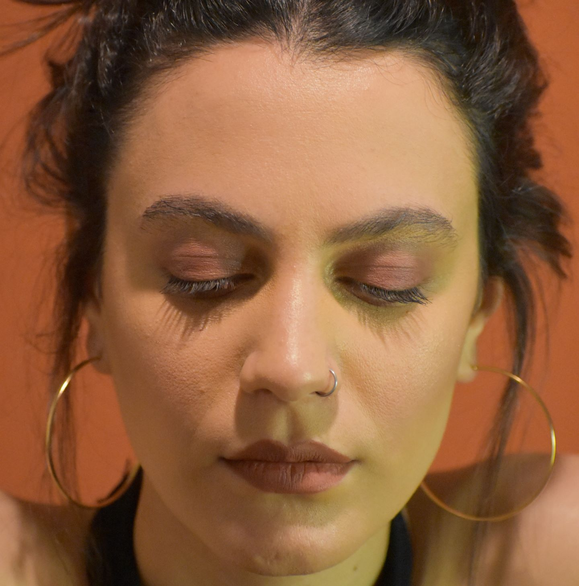
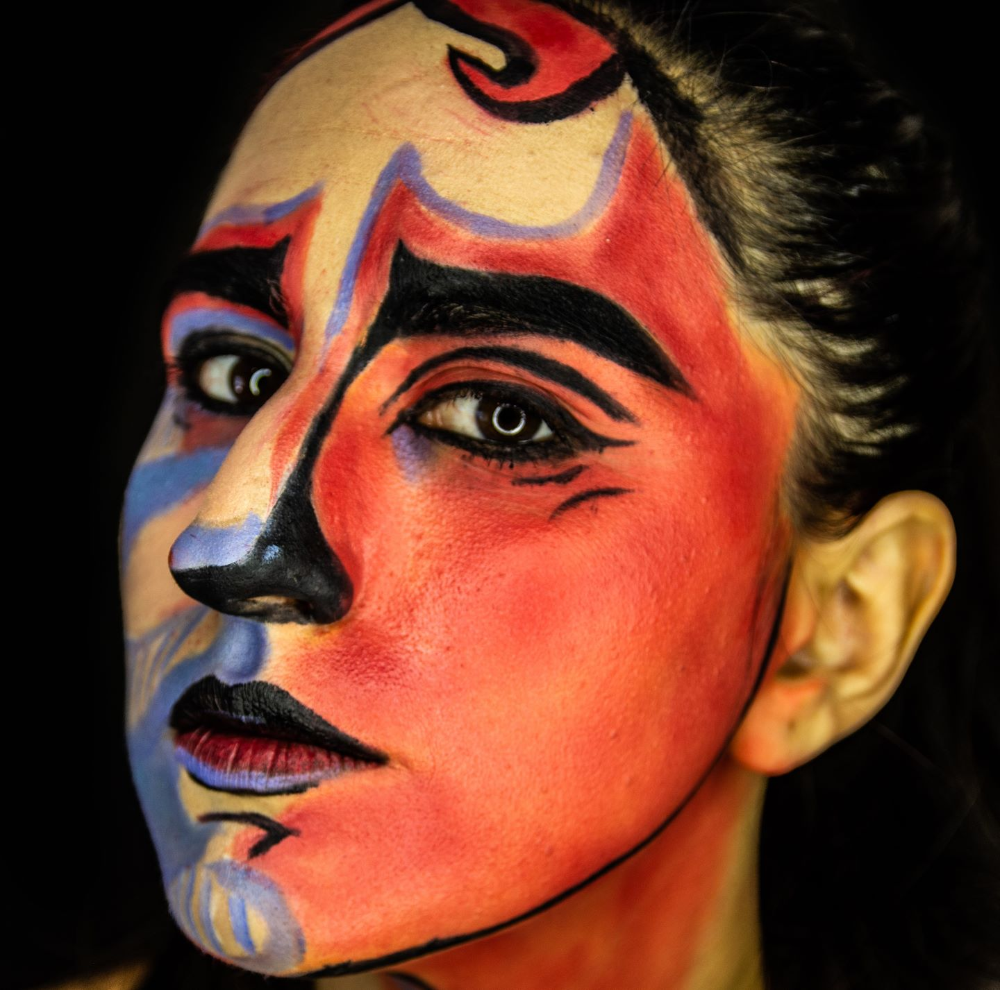
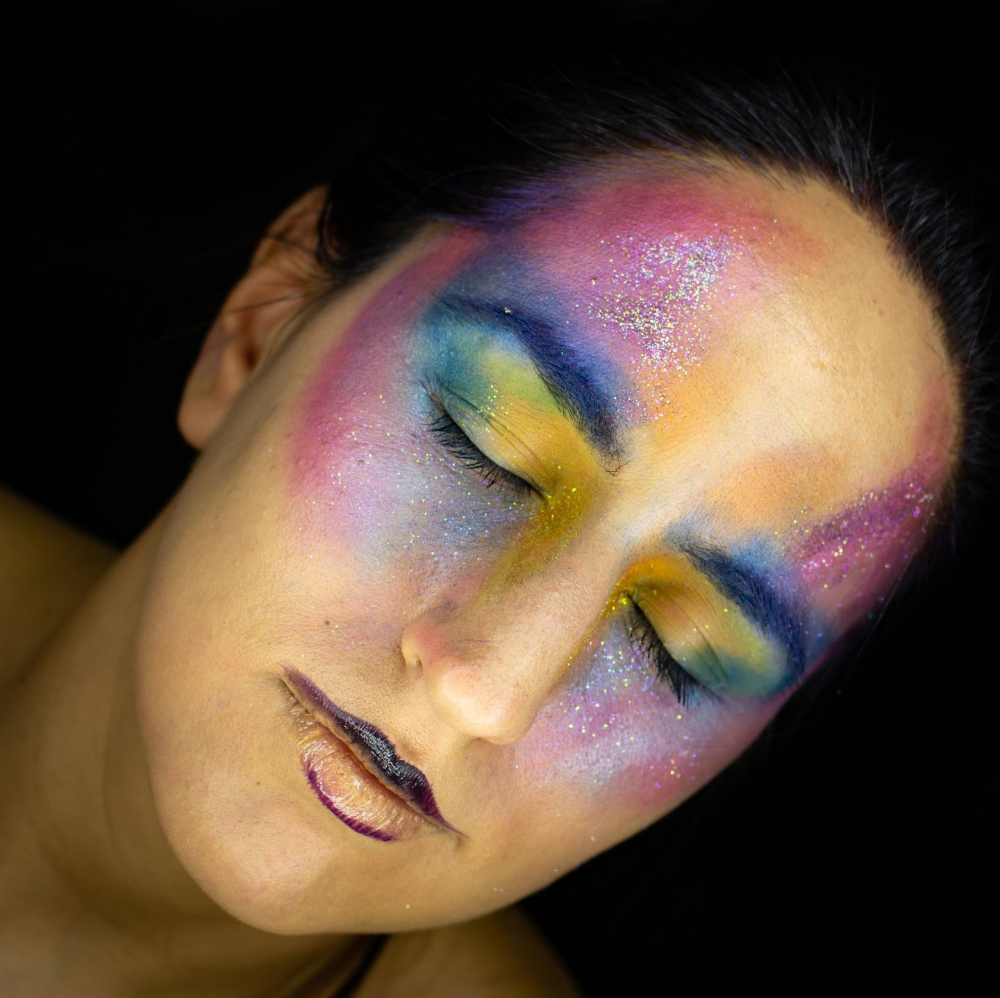
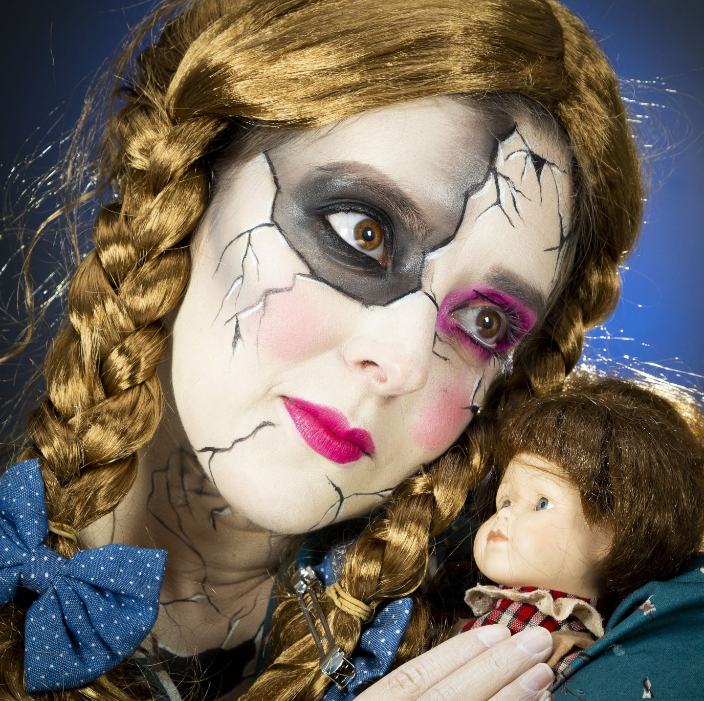
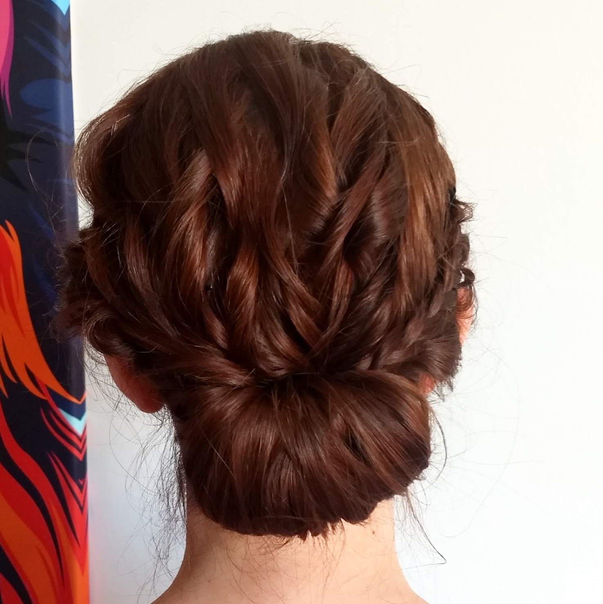
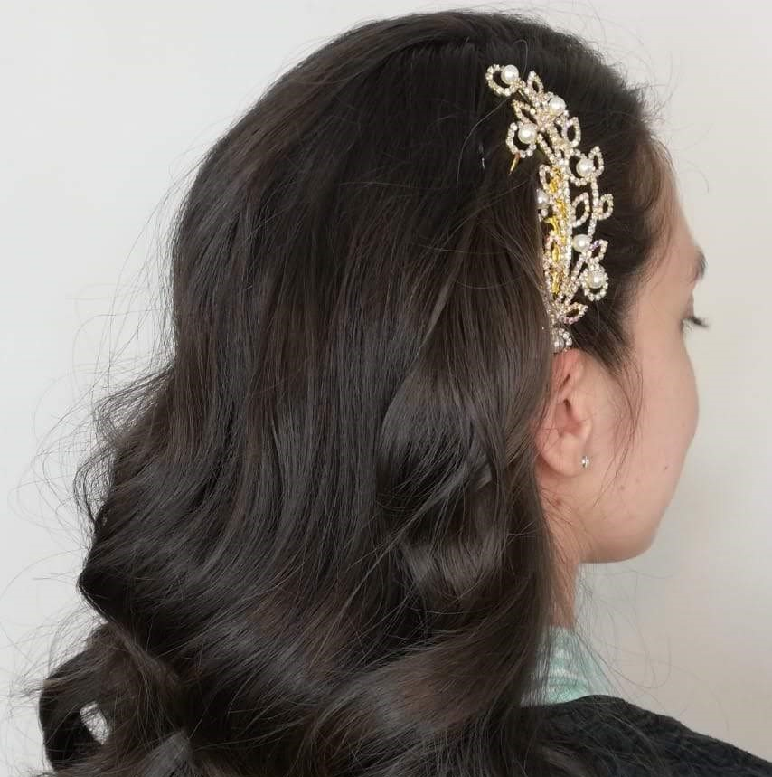

Formación profesional
- Maquillaje Social.
Estudio de Silvana Bustos Makeup, 2017
- Maquillaje Artístico.
Con Micaela Lucena, Estudio de Silvana Bustos Makeup, 2018
- Perfeccionamiento en Delineados.
Mua Makeup Studio, 2018
- Formación en Peinado.
Con Micaela Kraushaar, Estudio de Flor Zarate Makeup, 2019
- Perfeccionamiento en Smokey Glam.
Con Lucia Luque Makeup, 2019
- Masterclass en Cut Crease.
Mua Makeup Studio (Online), 2020
- Masterclass en Maquillaje Editorial.
Con Danessa Myricks (Online), 2020
- Perfeccionamiento en Colorimetría.
Con Lucia Luque Makeup (Online), 2021
- Perfeccionamiento en Maquillaje Editorial.
Mua Makeup Studio, 2022
- Perfeccionamiento en precisión. Cejas, ojos y labios.
Flor Zarate Makeup (Online), 2022
Trabajos





